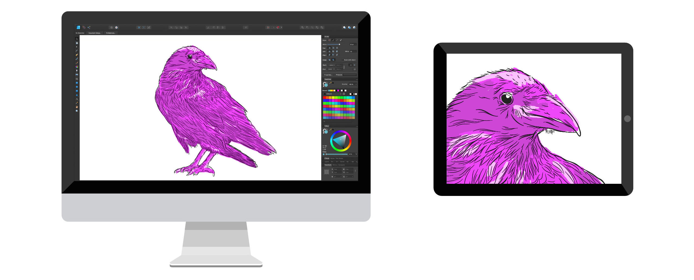
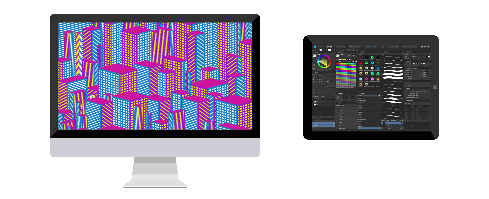

Sidecar allows you to connect your Mac and iPad to extend or mirror your desktop onto your iPad’s display. With this functionality, you can draw on your iPad using an Apple Pencil to edit documents in your Affinity Mac apps.
To run Sidecar, you will need:
Sidecar can work with a wired connection (Lightning or USB Type-C) or wirelessly. Bluetooth, Wi-Fi and Handoff must be switched on for a wireless connection to work.
Sidecar will stay connected within a range of 10 meters (30 feet); both connected devices must be logged into the same iCloud account in order for Sidecar to work.
To connect your devices using Sidecar, open the AirPlay menu and choose your iPad. When Sidecar is in use, the AirPlay menu changes to an iPad icon. Click this icon for instant control of your iPad display. You can decide whether the display mirrors or extends the Mac desktop and shows additional Mac shortcuts alongside the desktop. There are also links to display any Sidecar preferences.


Sidecar works with one iPad at a time, but it can be used alongside additional external displays.
To switch from a wired to wireless connection or vice versa, disconnect the Mac from the iPad using the AirPlay menu bar icon, then reconnect.
When you first connect to Sidecar, your iPad will become a secondary display by default, allowing you to drag apps directly between your devices.